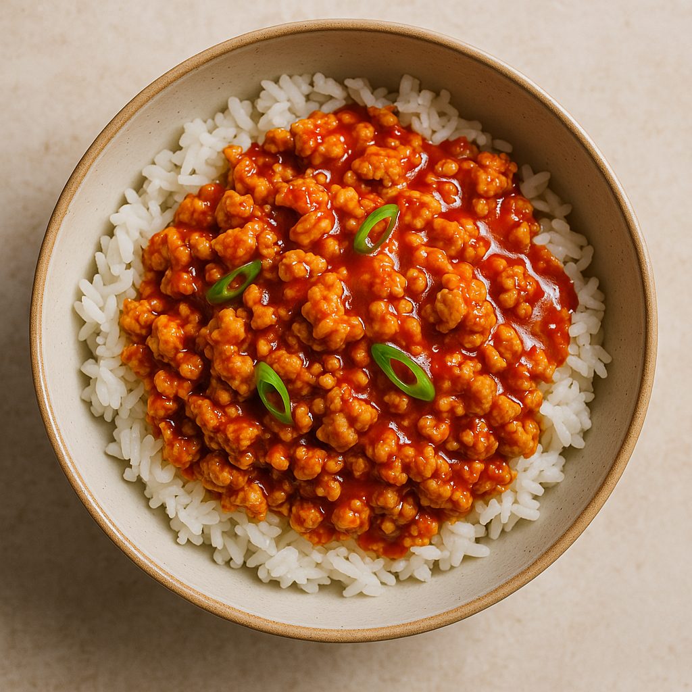

Firecracker Ground Chicken

Description
Bold, spicy, and slightly sweet, Firecracker Ground Chicken is a quick and flavorful dish that packs a punch. Ground chicken is cooked to tender perfection and coated in a fiery sauce made with hot sauce, brown sugar, and soy sauce—creating a mouthwatering balance of heat and sweetness. Ready in under 30 minutes, it’s perfect for busy weeknights and pairs well with rice, noodles, or lettuce wraps.
Ingredients
For the chicken
- 1 lb (450g) ground chicken
- 1 tablespoon vegetable oil
- 2-3 cloves of garlic, minced
- 1/2 teaspoon ground ginger (or 1 tsp fresh grated ginger)
- Salt and pepper to taste
- 2 green onions, chopped (optional, for garnish)
- Cooked rice, for serving (optional)
For the firecracker sauce
- 1/3 cup buffalo hot sauce (e.g., Frank's RedHot)
- 1/4 cup brown sugar
- 1 tablespooon soy sauce
- 1 teaspoon apple cider vinegar or rice vinegar
- 1/4 teaspoon crushed red pepper flakes (optional, for extra hear)
Steps
- In a small bowl, whisk together buffalo hot sauce, brown sugar, soy sauce, vinegar, and red pepper flakes (if using). Set aside.
- Heat the oil in a large skillet over medium-high heat. Add the ground chicken and cook, breaking it up with a spatula, for 5–7 minutes or until fully cooked and browned.
- Add the minced garlic and ginger. Sauté for 1–2 minutes until fragrant.
- Pour the firecracker sauce over the cooked chicken. Stir well to coat. Reduce heat to medium-low and simmer for 5–7 minutes, allowing the sauce to thicken slightly and absorb into the meat.
- Taste and adjust seasoning if needed—add more hot sauce for spice or brown sugar for sweetness.
- Spoon over a bed of steamed rice or lettuce cups, and garnish with chopped green onions if desired. Serve hot!
Homepage